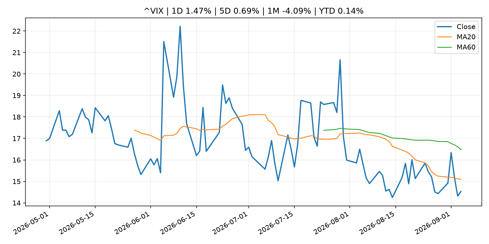
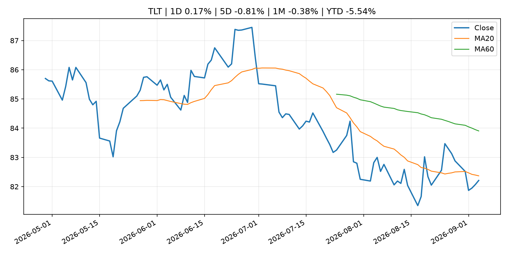
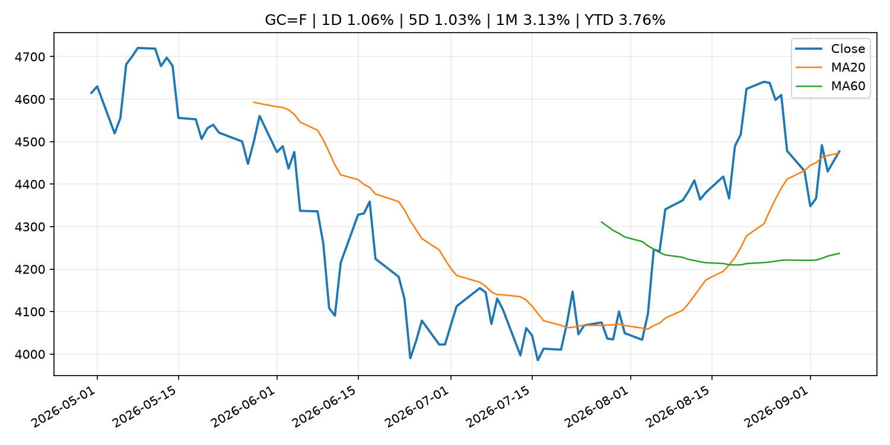
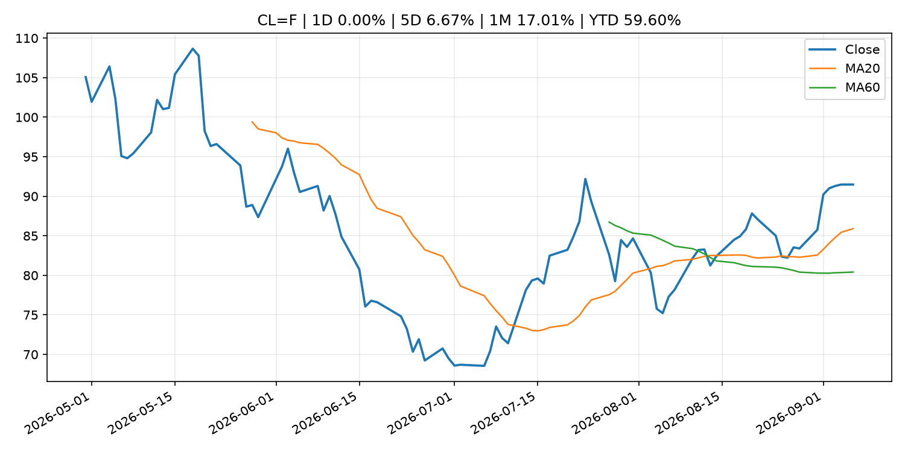
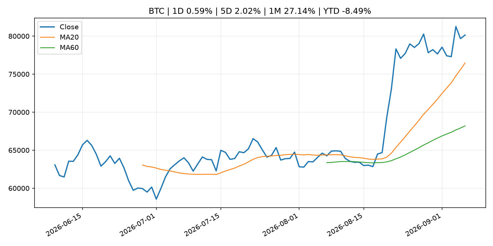
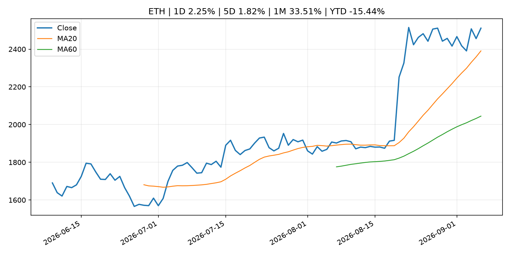
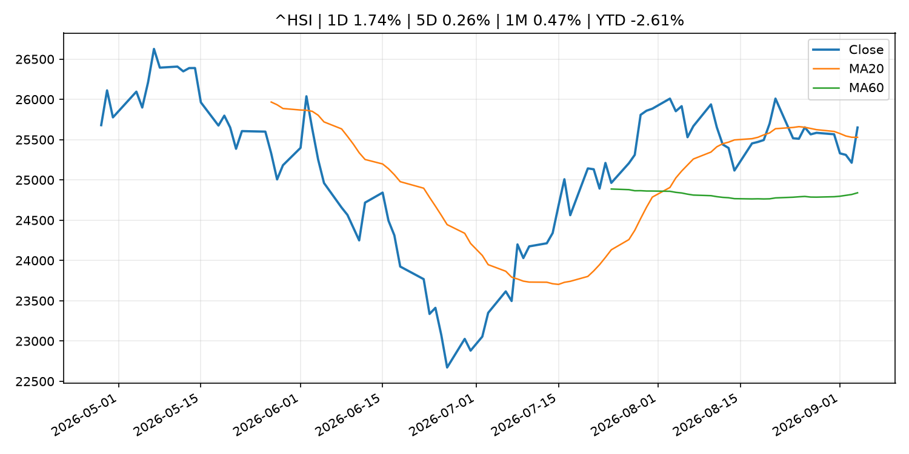

Global Macro Morning Briefing - 2026-09-07
Not financial advice / 非投资建议。
0. 今日总览
- 市场状态：crypto_specific。BTC/ETH 明显走强但美股平淡，行情更像加密自身事件驱动。
- 今日三大主线：
- ‘Poverty doesn’t have to be my reality’: I thought I’d have to rely on Social Security. Then I taught myself how to invest.
- Better and Coinbase’s bitcoin-backed mortgages can reuse borrowers’ collateral
- 一句话结论：今日晨报重点关注：这条信息暂未匹配到重大宏观、政策或市场事件，更适合作为背景跟踪。；这条信息暂未匹配到重大宏观、政策或市场事件，更适合作为背景跟踪。。跨资产方面，SPY 1D -0.39%；QQQ 1D 0.18%；^VIX 1D 1.47%；TLT 1D 0.17%；GC=F 1D 1.06%；CL=F 1D 0.00%；BTC 1D 0.59%；ETH 1D 2.25%；BTC/ETH 明显走强但美股平淡，行情更像加密自身事件驱动。政策、通胀、利率、美元、美债、能源和加密监管仍是主要观察线索。所有结论仅基于公开数据与短摘要整理，不构成投资建议。
1. 隔夜跨资产市场
- 美股：SPY 1D -0.39%，QQQ 1D 0.18%，整体趋势需结合 VIX 和利率确认。
- 美债/美元：TLT 1D 0.17%，美元指数 1D -0.03%，是判断折现率压力的核心线索。
- 黄金/原油：黄金 1D 1.06%，原油 1D 0.00%，用于观察避险、通胀和地缘风险。
- 加密：BTC 1D 0.59%，ETH 1D 2.25%，关注是否独立于纳指走出加密自身行情。
- 港股/A股：恒生 1D 1.74%，沪深300/上证 1D n/a，重点看中国政策预期与人民币线索。
- 风险观察：关注 ETF、监管、稳定币或链上流动性新闻。
US_EQUITY
| symbol | latest close | 1D | 5D | 1M | YTD | trend |
|---|---|---|---|---|---|---|
| SPY | 770.19 | -0.39% | 0.11% | 0.21% | 12.74% | uptrend |
| QQQ | 718.96 | 0.18% | 0.35% | 0.60% | 17.26% | uptrend |
| DIA | 534.08 | -0.53% | -0.18% | -0.76% | 10.43% | range_bound |
| IWM | 296.01 | 0.28% | 0.09% | -0.75% | 18.98% | range_bound |
| VTI | 379.73 | -0.32% | 0.10% | 0.17% | 12.91% | uptrend |
US_MACRO_MARKET
| symbol | latest close | 1D | 5D | 1M | YTD | trend |
|---|---|---|---|---|---|---|
| ^VIX | 14.53 | 1.47% | 0.69% | -4.09% | 0.14% | downtrend |
| DX-Y.NYB | 99.13 | -0.03% | -0.30% | -0.47% | 0.72% | downtrend |
| TLT | 82.21 | 0.17% | -0.81% | -0.38% | -5.54% | downtrend |
| IEF | 92.25 | -0.03% | -0.65% | -0.75% | -3.99% | downtrend |
COMMODITIES
| symbol | latest close | 1D | 5D | 1M | YTD | trend |
|---|---|---|---|---|---|---|
| GC=F | 4,476.60 | 1.06% | 1.03% | 3.13% | 3.76% | strong_uptrend |
| SI=F | 66.75 | 1.06% | 0.80% | 5.39% | -5.40% | strong_uptrend |
| CL=F | 91.48 | 0.00% | 6.67% | 17.01% | 59.60% | strong_uptrend |
| BZ=F | 96.28 | 0.00% | 6.40% | 15.24% | 58.49% | strong_uptrend |
| NG=F | 2.97 | 0.00% | 1.36% | 11.76% | -17.77% | range_bound |
| HG=F | 6.68 | 1.30% | 1.35% | 1.70% | 18.48% | uptrend |
HK_MARKET
| symbol | latest close | 1D | 5D | 1M | YTD | trend |
|---|---|---|---|---|---|---|
| ^HSI | 25,650.87 | 1.74% | 0.26% | 0.47% | -2.61% | uptrend |
| 0700.HK | 442.80 | 2.26% | -2.72% | -7.60% | -28.92% | downtrend |
| 9988.HK | 110.10 | 2.42% | -3.34% | -11.50% | -26.11% | range_bound |
| 3690.HK | 81.75 | 5.28% | 5.48% | -11.33% | -21.85% | range_bound |
| 1810.HK | 28.44 | 3.64% | 2.23% | 5.88% | -29.39% | strong_uptrend |
| 1211.HK | 86.15 | 0.53% | -6.31% | -4.12% | -12.76% | range_bound |
CRYPTO
| symbol | latest close | 1D | 5D | 1M | YTD | trend |
|---|---|---|---|---|---|---|
| BTC | 80,138.63 | 0.59% | 2.02% | 27.14% | -8.49% | strong_uptrend |
| ETH | 2,511.35 | 2.25% | 1.82% | 33.51% | -15.44% | strong_uptrend |
| SOLANA | 106.36 | 4.35% | 3.25% | 41.29% | -14.58% | strong_uptrend |
| BINANCECOIN | 752.05 | 4.24% | 8.81% | 23.85% | -12.82% | strong_uptrend |
| RIPPLE | 1.42 | 1.58% | 3.01% | 41.82% | -22.81% | uptrend |
2. 今日最重要的 10 条新闻
1. ‘Poverty doesn’t have to be my reality’: I thought I’d have to rely on Social Security. Then I taught myself how to invest.
- 来源：MarketWatch Top Stories
- 时间：2026-09-06T20:00:00+00:00
- 地区：US
- 事件类型：other
- 重要性层级：Tier 3
- 一句话摘要：“It always baffled me how some people managed to retire with significant wealth.”
- 为什么重要：这条信息暂未匹配到重大宏观、政策或市场事件，更适合作为背景跟踪。
- 可能影响：更偏背景信息，短期市场影响可能有限。
- 资产：暂无明确资产映射
- 方向：unknown
- 强度：low
- 原因：公开信息不足以判断方向。
- 原文链接：https://www.marketwatch.com/story/i-didnt-know-what-i-didnt-know-i-thought-id-have-to-depend-on-social-security-then-i-taught-myself-how-to-invest-0129870b?mod=mw_rss_topstories
2. Better and Coinbase’s bitcoin-backed mortgages can reuse borrowers’ collateral
- 来源：CoinDesk
- 时间：2026-09-06T14:00:00+00:00
- 地区：global
- 事件类型：other
- 重要性层级：Tier 3
- 一句话摘要：Better and Coinbase’s bitcoin-backed mortgages can reuse borrowers’ collateral
- 为什么重要：这条信息暂未匹配到重大宏观、政策或市场事件，更适合作为背景跟踪。
- 可能影响：更偏背景信息，短期市场影响可能有限。
- 资产：暂无明确资产映射
- 方向：unknown
- 强度：low
- 原因：公开信息不足以判断方向。
- 原文链接：https://www.coindesk.com/business/2026/09/06/better-and-coinbase-s-bitcoin-backed-mortgages-can-reuse-borrowers-collateral
3. 政策与央行观察
暂无可靠数据。
- 为什么重要：没有可靠新闻时，不应为了填充版面编造市场解释。
4. 市场异动与图表
- Gold 上涨 1.06%
- ETH 上涨 2.25%
SPY

QQQ

^VIX

TLT

GC=F

CL=F

BTC

ETH

^HSI

5. 华尔街与机构公开观点
- 暂无可靠公开观点。
6. 今日重点关注
- 经济数据：经济数据：暂无可靠公开日历数据；如配置经济日历源后可自动填充。
- 央行讲话：央行讲话：暂无可靠公开日历数据；重点跟踪 Fed、ECB、BoJ、PBOC 官网 RSS。
- 财报：财报：暂无可靠数据。
- 政策事件：政策事件：暂无可靠数据。
- 风险提醒：风险提醒：关注数据源失败项、突发地缘风险、利率和美元的二阶反应。
7. 英文金融表达与宏观概念
- market structure：市场结构，指交易、托管、清算、ETF、监管等制度安排。 例句：Crypto market structure rules can affect institutional participation.
- inflation expectations：通胀预期，指家庭、企业或市场对未来通胀的预估。 例句：Inflation expectations can shape wage bargaining and bond yields.
- real yield：实际收益率，名义利率扣除通胀预期后的收益率。 例句：Gold often reacts more to real yields than nominal yields.
- terminal rate：终端利率，市场预期本轮加息周期的最高政策利率。 例句：A higher terminal rate can pressure growth stocks.
- soft landing：软着陆，指通胀回落而经济避免明显衰退。 例句：Markets often rally when data support a soft landing.
- risk-off：避险模式，资金偏向美元、国债、黄金等防御资产。 例句：A geopolitical shock can push markets into risk-off mode.
8. 背景材料
- ‘Poverty doesn’t have to be my reality’: I thought I’d have to rely on Social Security. Then I taught myself how to invest.（MarketWatch Top Stories，other）：“It always baffled me how some people managed to retire with significant wealth.”
- Better and Coinbase’s bitcoin-backed mortgages can reuse borrowers’ collateral（CoinDesk，other）：Better and Coinbase’s bitcoin-backed mortgages can reuse borrowers’ collateral
- ‘I’m leaving money on the table’: I’m 64 and my husband is 70. Should I take spousal benefits or wait for my own?（MarketWatch Top Stories，other）：“I paid a significant amount into Social Security.”
- Is the U.S. losing its safe-haven status? Why global central banks are pulling gold out of New York.（MarketWatch Top Stories，other）：What to know about safe havens and the U.S., as the Netherlands’ central bank follows France in pulling gold out of New York.
- Timing the bitcoin market is exciting but nearly impossible. Here's why（CoinDesk，other）：Timing the bitcoin market is exciting but nearly impossible. Here's why
- Dollar-backed stablecoins can push local currencies lower, Bank of Korea study finds（CoinDesk，other）：Dollar-backed stablecoins can push local currencies lower, Bank of Korea study finds
- British investor thought he lost $2,000 in bitcoin in 2012. He just recovered $4.5 million（CoinDesk，other）：British investor thought he lost $2,000 in bitcoin in 2012. He just recovered $4.5 million
9. 数据源、失败项与免责声明
- 采集时间：2026-09-06T23:29:41
- 数据源：公开 RSS、Yahoo Finance、CoinGecko、AKShare、FRED、SEC data.sec.gov，以及用户自有 inputs/reports 文件。
- 合规说明：不绕过 WSJ、Bloomberg、FT、Reuters 等付费墙；对付费媒体只使用公开 RSS 标题、摘要、链接和发布时间。
- 免责声明：Not financial advice / 非投资建议。本项目仅供个人学习、研究和信息整理，不构成投资建议、交易建议或任何收益承诺。
- 失败或跳过的数据源：
- crypto data failed coin=dogecoin
- China market data failed symbol=上证指数: empty dataframe
- China market data failed symbol=深证成指: empty dataframe
- China market data failed symbol=创业板指: empty dataframe
- China market data failed symbol=沪深300: empty dataframe
- China market data failed symbol=中证500: empty dataframe
- China market data failed symbol=科创50: empty dataframe
- FRED_API_KEY not set; skipping FRED macro series
- SEC failed cik=0000320193
- SEC failed cik=0000789019
- SEC failed cik=0001045810
- SEC failed cik=0001318605
- SEC failed cik=0001577552